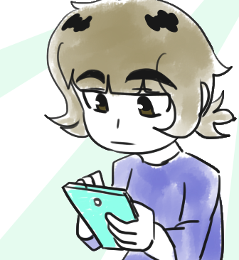

“The boy’s soul is refined into something purer.
Into a monster with perfect, fearsome beauty.”
Nombre: Elizabeth Herrera | Correo: elizabeth.herrera2530@gmail.com
Repositorio: Bitbucket |
Repositorio: GitHub
Edad: 21 años | Color favorito: Rojo/Rosa
Me gusta tanto la parte artistica de la carrera como la de programacion, aunque si tengo un poco mas de preferencia sobre la programacion que lo artistico.
Mi superheroinas favoritas son las Chicas Superpoderosas y Ladybug, realmente me encantan.
No me gusta la cebolla, ni la mayoria de los vegetales.
Me divierte hacer lo que se conoce como "shippeo" de personajes, pero detesto
que reduscan las series a solo eso.
Cough cough Attack on Titan cough
.
Mi serie favorita de todos los tiempos, es Attack on Titan. La he visto desde
su primera temporada en el 2013, sigo su manga y lo compro cuando puedo. Amo todo lo que
ocurre en la serie asi como el mensaje que trata de transmitir el autor que es maravilloso,
sus personajes son increibles pero sobre todo las relaciones tan humanas y reales entre ellos.
El entusiasmo que le dedica el Estudio de Animacion "Wit Studio", es impresionante, agradesco
a Dios todos los días que la serie fuera rechazadada por Shūeisha y asi terminara en
manos de Kodansha.
| Foto | Intereses | Pasatiempos |
|---|---|---|
|  |
|
|